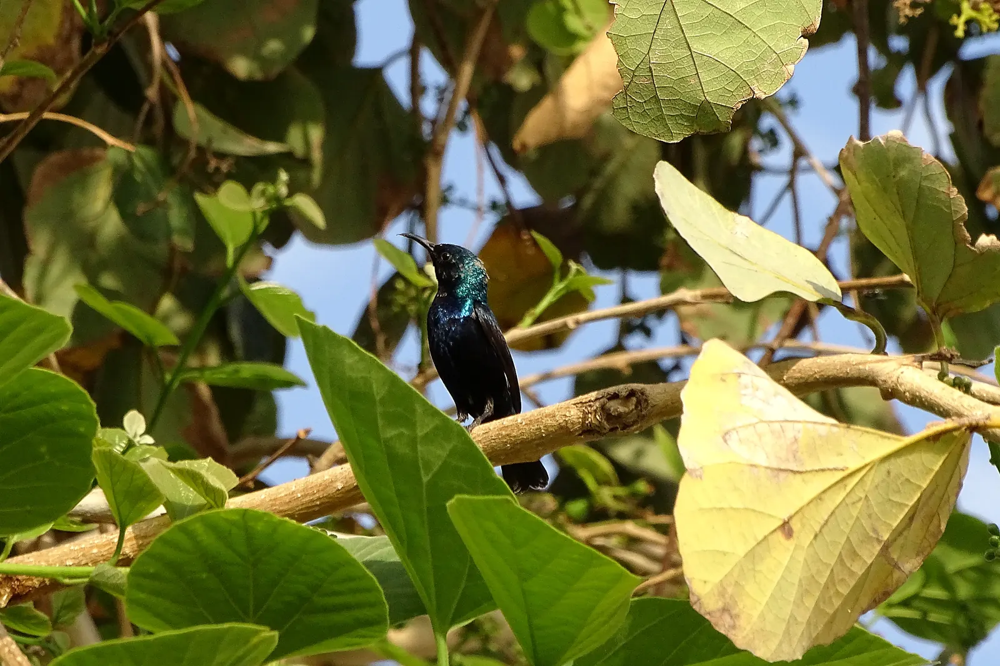
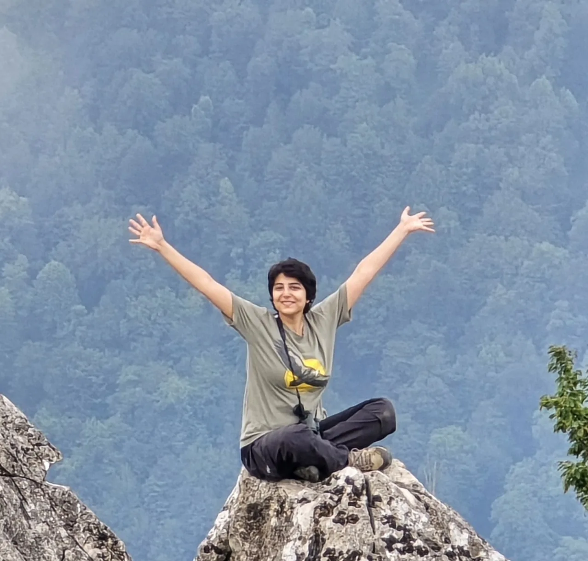
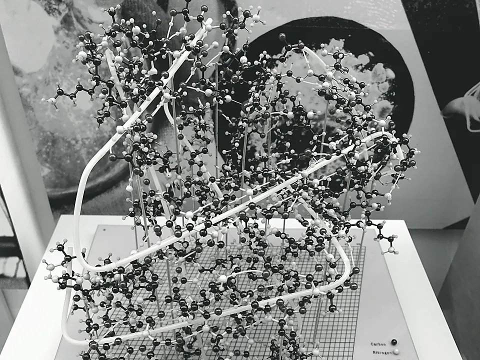
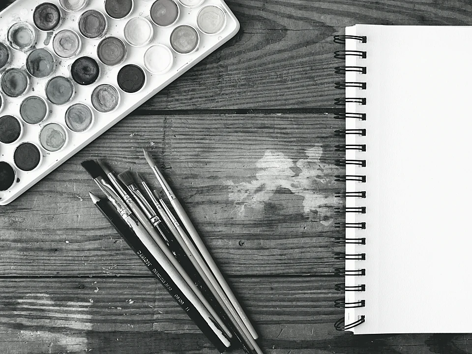

TapsiFood · 2024–2025
Growth marketing manager
Built a seven-person growth team covering CRM, acquisition, and marketing insights. Owned planning, forecasting, and how spend moved with results.

GROWTH · ANALYTICS · CURIOSITY
I work with customer and business data to make growth decisions. Outside of that, I write, hike, and spend time looking closely — at birds, cities, and questions that do not belong to a job title.
01Purple sunbird · Minab, Hormozgan
NowBetween roles, studying AI-powered business
WasGrowth marketing manager at TapsiFood; lead CRM data analyst at Snapp
AlsoWriting, science, art, essays, nature
I trained in computer science and bioinformatics, then spent the last several years in data analysis, CRM, and growth marketing — first building analyses, later owning planning, budgets, and a team.
The through-line is attention: turning messy operational reality into a picture someone can act on. I like problems that sit between numbers and people.
I can help with growth planning, CRM, and the business questions that sit under the dashboard — or a different mindset — the ones a number still hasn't explained.

TapsiFood · 2024–2025
Built a seven-person growth team covering CRM, acquisition, and marketing insights. Owned planning, forecasting, and how spend moved with results.
Snapp · 2022–2024
Analyzed campaigns from baseline to aftermath, and automated reporting in Python and SQL.
Dataleaks · 2021–2022
Visualization, geospatial data, and a scientific training that still shapes how I ask questions.
Occasional notes on technology, science, art, and other subjects that catch my attention. Nothing here is published yet — these are seeds.

PROTEIN STRUCTURE · ALPHAFOLD · IDEA
Predicting how a protein folds used to eat years. AlphaFold didn’t just make that faster — it changed which questions biology is allowed to ask next. That’s the piece I want to write: not a tutorial, a feeling of a field unlocking.

ESSAYS / ART · OPEN
Essays, observations, and things I want to understand better. This row stays empty on purpose — it grows when I actually have something to share.
A reason to look closer.
Birdwatching and travel are serious hobbies of mine. A small collection of places, wildlife, and moments I wanted to keep.
The other chair is yours.
If you’re a recruiter, or you want to talk about work, write — I’ll send the full résumé.